第5章
动物的特殊表情
·Special Expressions of Animals·
现在我们已经充分举出了各种不同的动物的表情方面的事实。我不能同意贝尔爵士的说法，就是他说道：“动物的面部好像主要是能够表达出大怒和恐惧来”；他还说道，动物的一切表情“都可以或多或少明显地被归属于意志的动作或者必要的本能的动作方面去”。
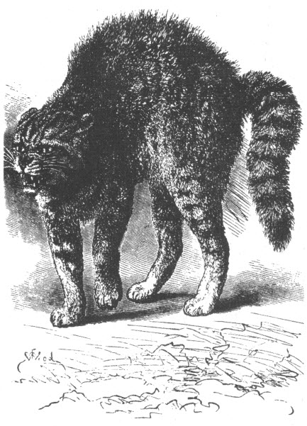
在两只小猫在一起游戏的时候，时常有一只小猫采取这种方法去吓退对方。
狗、猫、马、反刍动物和猿类的各种表情动作及其快乐和恋情、苦痛、愤怒、吃惊和恐怖的表情
狗——前面我已经讲到（图5和图7），一只抱着敌对企图的狗在走近另一只狗的时候的外貌，就是：它具有竖起的双耳，向前注视的眼睛，颈部和背部的直竖的毛，显著坚定的步态和向上竖起的刚硬的尾巴。我们对这种外貌已经很熟悉，因此有时在谈到一个发怒的人的时候，就说，他好像“背部弓起来了” (1) ，在上面这些特征当中，只有坚定的步态和向上竖起的尾巴两种，需要再作进一步的讨论。贝尔爵士指出说，在一只老虎或者狼受到饲养员的敲打而突然被惹起凶暴性情来的时候，它的“每块肌肉都紧张起来，而四肢就采取紧张状态，作好扑跃的准备”。 (2) 可以采用联合性习惯原理，来说明肌肉的紧张力量和因此而引起的坚定的步态，因为愤怒在经常不断地引起凶恶的格斗，所以结果也就引起了全身一切肌肉异常紧张起来。还有一个理由可以推测说，肌肉系统在被引起强烈的动作以前，还需要作某种短期的准备或者作某种程度的神经支配。我自身的感觉使我得出了这个结论来；可是，我却还不能认为这也是生理学家们所承认的结论。可是，彼哲特爵士告诉我说，在突然用极大的力量把肌肉收缩起来而毫无准备的时候，这些肌肉就容易断裂，例如一个人在突然滑跌的时候，就会发生这种情形；可是，如果他有意去进行一种动作，不管它怎样激烈，那么也就很少会发生这种情形。
至于说到尾巴向上直竖的位置，那么它大概是要根据（我还不知道情形是不是真的这样）那些比降肌（depressors）更加有力的提肌（elevator muscles），因此在身体的后面部分的一切肌肉都进入紧张状态时候，尾巴也就向上举起来了。当一只狗兴高采烈，在主人面前用高大的、有弹性的脚步奔驰的时候，通常它的尾巴也向上举起，但是并没有像它在被激怒时候的尾巴那样几乎坚定不动。当一匹马起初走进空旷的田野里去的时候，也可以看到，它马上用高大的、有弹性的脚步向前奔驰，头部和尾巴都向上高举起来。甚至是牛，在由于愉快而跳跃的时候，也以滑稽状态把尾巴向上甩起。动物园里的各种动物也都是这样的。可是，在有些情形下，尾巴的位置要由特殊的情况来决定；例如，马在转入到最迅速的急驰时候，常常把尾巴下垂，以便尽可能减小空气的阻力。 (3)
狗在准备朝向敌人跳扑的时候，就发出一种怒恨的咆哮声来；它的双耳向背后紧贴，上唇（图14）退缩，把牙齿显露出来，特别是把犬齿显露出来。在两狗相对咆哮的时候，或者在小狗作着咆哮游戏时候，有一只狗真的怒恨起来，那么它的表情也就会立刻发生变化。不过这种变化只是由于用了更加大的力量把嘴唇和耳朵向后牵伸而造成的。如果一只狗单单向另一只狗咆哮，那么它的嘴唇通常只有一侧向后缩，就是对它的敌方的一侧嘴唇后缩。
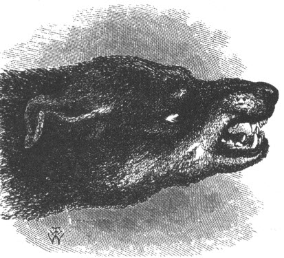
图14 正在咆哮的狗的头部 （武德先生的写生画）
在前面第二章里，已经讲述到狗在向它的主人表示恋情时候的动作（图6和图8）。这些动作就是：头部和全身低降，开始作屈曲动作，同时尾巴外伸而且左右摆动。它的双耳下垂，略微向后牵伸，因此就使眼睑伸长，而且面部的整个外貌发生变化。它的嘴唇宽松地下垂，而毛发则仍旧变得平滑起来。我以为，所有这些动作或者姿态，都是可以使人明白的；这就是因为它们是和怒恨的狗在直接相反的精神状态下所自然地采取的那些动作完全对立的。当一个人单单叫唤自己的狗，或者只是注视它一下的时候，我们只能看到这些动作的痕迹，就是把尾巴略微摇摆一下，而没有其他的身体动作出现，甚至也没有双耳下降的动作。狗还打算去挨擦自己的主人身体、希望受到主人的抚摸和轻拍，因而表明出自己的恋情来。
格拉希奥莱对于上述的恋情的姿态作了下面的说明；读者可以来判断一下，这种说明是不是可以认为满意。他在讲到一般的动物（连狗也包括在内）的时候说道：“C'est toujours la partie la plus sensible de leurs corps qui recherche les caresses ou les donne. Lorsque route la longueur des flancs et du corps est sensible，l'animal serpente et rampesous les caresses；et ces ondulations se propageant le long des muscles analogues des segments jusqu'aux extrémités de la colonne vertébrale，la queue se ploie et s'agite.”。 (4) (5) 再下去，他补充说，狗在发生恋情时候，把双耳下垂，以便排除一切音响，这样它们的全身注意力就可以集中到主人的爱抚方面去！
狗还有一种表明自己恋情的显著的方法，就是用舌头去舔主人的手和面孔。它们有时也去舔其他的狗，而这时候所舔的部分则是嘴脸。我还曾经看到，狗去舔那些和它们结成朋友的猫。这些习性的来源，大概就在于母狗仔细地舔自己的小狗（它们最溺爱的对象），以便拭干净小狗的身体。母狗也时常在离开自己的小狗不久而回来以后，显然是由于恋情而对小狗身体作不多几次的舔拭。因此，这种习惯就和爱情联合起来了。无论如何它后来可以被爱情所引起。现在这种习惯就被多么坚强地遗传下去或者成为天生的，因此雌雄两性都同样地遗传到了这种习惯。我所养的一只雌性的
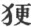
（terrier，猎狗的一种）最近丧失了它的全部小狗；虽然它经常是一只具有很深的恋情的动物，但是它企图把自己的本能的母爱扩展到我的身上来，借此来达到自己在这方面的满足；因此，它舔我的手的欲望就上升到一种难以满足的激情了。 (6)大概也可以用同样的原理，去说明狗在发生恋情时候，为什么喜欢去挨擦主人的身体，并且也喜欢主人来擦摸或者轻拍它们；这就是因为它们由于保育小狗而和心爱的对象发生接触，这种接触就在它们的头脑里和爱情牢固地联合起来了。
狗对主人的恋情，是和一种相似于恐惧的强烈的服从感觉结合起来的。因此，狗在走近主人的时候，不仅把身体降下和略微靠近地面，而且有时投身到地上，把腹部翻转朝上。这种动作是和无论哪一种可能的抵抗表示完全对立的。我以前养有一只大狗；它毫不害怕地去和其他的狗相斗；可是，有一只邻近地方的像狼的形状的牧羊狗，虽然它并不凶恶，也没有我这只狗那样有力，但是对我的狗却有奇怪的影响。当这两只狗在路上相遇的时候，我的狗时常跑过去迎接这只牧羊狗，把尾巴半夹在两腿之间，而且也不竖起毛来；接着它就投身到地上，把腹部翻转朝上。它好像用这个动作来比起说话更加明显地表示说：“瞧吧，我是你的奴隶”。
有些狗用一种很特殊的方法，就是用露齿的方法，来表明出一种和恋情联合在一起的愉快而且兴奋的精神状态。 (7) 很早以前，索满维尔（Somerville）就已经注意到这一点；他写道：
而这只摇尾乞怜的猎狗，带着求媚的露齿状态，
伏地向你致敬；它把张大开来的鼻子
向上翻起，而把一对乌黑发亮的核桃般的大眼睛
溶解在温柔的殷勤和卑贱的快乐里面。
——《打猎集》（The Chase ），第1册
斯各特爵士所饲养的著名苏格兰灵
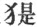
（Scotch greyhound，锐眼快足的猎狗），叫做美达（Maida），就具有这种习惯； （小猎狗）普遍具有这种习惯。我还看到，斯比兹种猎狗 (8) 和一种牧羊狗也有这种习惯。利威尔先生曾经特别注意到这种表情；他告诉我说，这种表情很少被完全表现出来，但是轻度的表现则很普遍。在露齿动作出现时候，上唇向后退缩，也像咆哮时候的情形一样，因此犬齿向外露出，双耳向后牵伸；可是，当时这只动物的一般面貌仍旧清楚地表明出没有发怒的想法。贝尔爵士指出说，“狗在作着亲爱的表情时候，把双唇向外翻转，并且在欢跃的时候，露齿和用鼻嗅物，因此这个样子好像是在发笑”。 (9) 有些人就把露齿称做是微笑；可是，如果这算是微笑的话，那么在狗发出快乐的吠叫声的时候，我们同时也就会看到一种相似的、而且更加显著的双唇和双耳的动作；可是情形却不是这样，不过快乐的吠叫声时常随着露齿而发出。另一方面，狗在和友好的狗或者和主人嬉戏的时候，时常假装要互相咬着玩；这时候，它们就把双唇和双耳向后牵伸，不过牵伸得不太厉害。因此，据我推测，有一些狗具有一种倾向，就是：当它们一感觉到那种和恋情相结合的热烈的愉快时候，那么由于习惯和联合，它们就想要去使一些肌肉行动起来，这些肌肉正就是它们在彼此互咬着玩或者戏咬着主人时候所使用的。在第二章里，我已经讲述到狗在兴高采烈时候的步态和外貌，还有它在沮丧和失望时候所表现的头、双耳、身体、尾巴和嘴脸低垂而且双眼无光这种显著的对立情形。狗在盼望着任何一种很大的愉快情形时候，就采取放荡的行为，在周围绕着乱跑和乱跳，作着快乐的吠叫。这种精神状况下的吠叫倾向，是天生的，或者是有遗传性的；灵
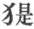
很少吠叫，而斯比兹种猎狗则在和主人动身去散步的时候，老是不断地吠叫，使人感到厌烦。狗差不多也像很多其他的动物一样，采用相同的方法，就是号叫，四肢扭捩和全身痉挛，来表现出自己的极度苦痛。
狗在注意时的表情动作，就是：头部抬起，双耳竖直，双眼正对着那个所要观察的物体或者方向凝视。如果这是一种声音，而它辨别不清声源的方向，那么它的头部就要时常极富有表情地向左右倾侧着转动，大概借此可以更加确切地去断定声音所发出的地点。可是，我曾经看到一只狗，在对一种新的噌声发生很大惊奇的时候，虽然已经清楚地觉察到了声源，但是仍旧由于习惯而把自己的头部转向侧面去，正像前面所指出的，如果狗的注意力被任何方法所激发起来，那么它不论在注意某种物体或者注意某种声音的时候，就时常要向上提起一只前脚来（图4），使它保持弯曲状态，好像是一种缓慢的偷偷走近过去的样子。
一只狗在极度恐怖时候，就把身体伏在地上，发出号叫声，并且排出粪便来；可是，我以为，除非是它在感到有些愤怒的时候，它的毛发绝不会直竖起来。我曾经看到一只狗，对于一个正在屋外高声演奏的乐队发生极大的恐怖，因此全身肌肉都颤抖起来，心脏跳动得非常急速，简直使人计数不清它的跳动次数，同时张大了嘴喘息起来，也好像一个受到恐怖的人所采取的样子。可是这只狗并没有因此采取剧烈的行动；它只是在房间里慢慢地继续不断地打圈子，而这一天的天气寒冷。
狗甚至是在极轻度的恐惧时候，也总是不变地表现出一种把尾巴 (10) 夹在双腿之间的情形来。 (11) 这种夹尾巴情形是和双耳向后牵伸同时发生的；可是，这时候双耳并不像在咆哮时候那样紧贴在头部上，也不像在它愉快或者发生恋情时候那样下垂。当两只小狗在作着互相追逐的游戏时候，那只在前面逃的小狗时常把尾巴夹起来。一只狗在精神非常奋发的时候，也做着同样的动作，像发疯的动物似的，不断地绕着主人打圈子，或者打着8字形的圈子。当时它所做的动作，也好像是在被另一只狗追逐时候所做的动作。这种奇怪的游戏，对于每个曾经注意到狗的习性的人应该是熟识的；在狗略微惊起或者受到惊吓的时候，例如由于主人突然在黑暗里向它跳跃过来而发生这种情形时候，这种游戏就特别容易被激发起来。这时候也像两只小狗互相追逐着玩的情形一样，好像那只逃跑的狗在恐防后面的狗抓住它的尾巴似的；可是，据我所能发现的说来，狗很少能互相用这种方法来抓住对方。我曾经去询问一位一生饲养狐
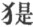
（foxhound，猎狐狗）的绅士，而他又去转询其他有经验的猎人：他们究竟有没有看到猎狗使用这种方法抓住狐狸；可是，他们从来都没有看到这种情形。大概在狗被追逐的时候，或者在恐防背后来的打击或者有任何东西落到它身上来的时候，它在所有这些情况下，就企图赶快把自己的身体的后半部分尽量收缩起来，因此由于肌肉之间的某种交感或者联系，而使尾巴也随着向内夹紧起来。在鬣狗（Hyaena）方面，也可以观察到它的身体后半部分和尾巴之间的相似的联系动作。巴尔特莱特先生告诉我说，在两只鬣狗互相打架的时候，它们互相意识到对方的双颚具有惊人的力量，因此特别小心谨慎。它们清楚知道，要是自己的腿被对方的双颚咬住，那么脚骨就马上会被咬成粉碎；因此，它们就采取双膝跪下的方式，彼此相对前进，尽量把自己的腿转向内侧，而且把全身弓起，使身体的任何重要部分都不致暴露出来；同时还把尾巴紧夹在双腿之间。它们就用这种姿势从侧面互相接近，或者一部分用后背前进。鹿的相斗情形也是这样，有几种鹿在怒恨和相斗的时候，就把尾巴夹紧。当田野的马打算要去咬另一匹马的后部作游戏的时候，或者当一个粗暴的男孩从后面鞭打驴的时候，马或者驴的后部就会退缩，而尾巴则夹紧；即使看上去好像这种举动并不会单单因此而使尾巴避免受伤，也仍旧会发生这种情形。我们也看到过一种和上述动作相反的情形，就是：当一只动物用有弹性的高大步子奔驰的时候，它的尾巴就几乎时常向上举起。
以前我已经讲到，在狗被追逐而逃跑的时候，它使双耳经常向后直伸，但仍旧是张开的；显然这是为了要倾听追逐者的脚步声而这样做的。甚至在明显地知道危险处在前方的时候，它的双耳由于习惯而仍旧保持在这个同样的部位，并且夹紧尾巴。我已经多次从我的胆小的
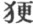
方面注意到，当它害怕前面的某种东西时候，虽然它已经完全知道这种东西的性质，而且也用不到再去辨认它，但是它仍旧有一长段时间把自己的双耳和尾巴保持在这种部位，望着这个使它烦恼的想象物。不带有任何恐惧的烦恼，也是被相似地表达出来；例如，有一天正巧在这只狗知道就要有人送午餐给它吃的时候，我要出门去。我没有呼唤它，但是它很想伴随我一起去，同时它也很想吃午餐；于是它站立着，起初向一方面看，接着又向另一方面看，把自己的尾巴夹紧，耳朵向后牵伸，表现出一种左右为难的烦恼的明显外貌来。上面所讲到的一切表情动作，除了快乐的露齿情形以外，差不多都是天生的或者本能的动作，因为所有各品种的一切个体，不论年幼的或者年老的，都能够做出这些动作来。狗的始祖，就是狼和胡狼，也普遍能够做出大多数这些动作来，同一类群的其他的种也能够做出它们当中的几种动作来。 (12) 驯顺的狼和胡狼在受到主人的抚爱时候，由于快乐而在四周欢跃着，摇摆尾巴，垂下双耳，舔着主人的手，蹲伏在地上，甚至还全身投在地面上，把腹部翻转向上。 (13) 我曾经看到一只很像狐狸的非洲胡狼，它产在加蓬（Gaboon，法属赤道非洲的南部一个地区），在受到主人爱抚时候，它的双耳紧贴在头上。狼和胡狼在受惊时候，的确夹紧尾巴；曾经有人记述过，有一只驯顺的胡狼，也像狗一样，把尾巴夹在两腿之间，绕着主人打圈子，并且打着8字形的圈子。
有人肯定说，狐狸无论怎样驯顺，也绝不会产生出上面所说的表情动作当中的任何一种来； (14) 可是，这种说法并不是完全正确的。在很多年以前，我在动物园里观察并且同时记录了这样一个事实，就是：有一种很驯顺的英国狐，在受到饲养员的爱抚时候，就摇摆起尾巴来，把双耳紧贴在头上，接着又把身体投在地上，使腹部翻转朝上。北美洲的黑狐也会把双耳略微贴在头上。可是，我以为，狐狸绝不会去舔主人的手； (15) 还有人向我肯定说，狐狸在受惊的时候，绝不夹起尾巴来。如果我提出的关于狗的恋情表现的说明得到大家同意，那么也就可以认为，那些从来没有被驯养过的动物，就是狼、胡狼、甚至是狐，却已经由于对立原理的支配而获得了某些表情姿态，因为这些被关在兽笼里的动物未必可能去模仿狗而获得这些动作。
猫——我在前面已经叙述一只猫（图9）在怒恨而并不感到恐怖时候的动作。这时候它采取蹲伏的姿态，有时伸出前脚，露出脚爪，准备进攻。它的尾巴向后伸出，同时弯曲或者左右甩劲。它的毛发并不竖直起来，至少是在我观察过的几次里没有这种毛发竖直情形。它的双耳紧紧地向后牵伸，牙齿露出。同时发出低沉的怒恨的咆哮声来。我们可以明白，一只猫在准备和另一只猫作战或者被任何方法激起大怒来的时候所采取的姿态，为什么和一只狗在走近另一只怀有敌对意图的狗时候所采取姿态有这样的极大不同；这是因为猫使用前脚去进攻，所以蹲伏地上的姿态，对它是方便的或者是必须的。还有，猫在埋伏和突然跳扑到猎物身上去方面，要比狗更加惯熟得多。为什么这时候猫的尾巴左右甩动和屈曲，对于这一点还不能作出肯定的说明来。很多其他的野兽，例如美洲狮（puma），在准备进扑时候也普遍具有这种习惯； (16) 可是，狗和狐狸则并不普遍具有这种习惯，例如我从圣·约翰（St. John）先生所讲到的一只狐狸埋伏和捕捉野兔的情形方面就作出了这个结论来。我们已经看到，有几种蜥蜴和各种不同的蛇在受到激奋时候，就把尾巴尖端急速地振动起来。看上去，好像在强烈的兴奋之下，由于神经力量从兴奋起来的感觉中枢里被自由地释放出来，所以就出现了一种对于某种动作难以控制的欲望；又因为尾巴处在自由状态里，而它的动作并不破坏身体的整个位置，所以它就作屈曲或者甩动的动作。
当猫发生恋情的时候，它的一切动作就和刚才所叙述的动作完全对立起来。这时候它就直立起来，背部略微弓起，尾巴向上笔直竖起，双耳也直竖起来，同时它把双颊和身体侧面部分去挨擦男主人或者女主人。猫在这种精神状态下所发生的这种要去挨擦某种东西的欲望，十分强烈，因此时常可以看到，它们把身体去挨擦椅子脚或者桌子脚，或者去挨擦门柱。这种表现恋情的方法，大概也像狗的情形一样，按照联合原理，起源于母猫保育和溺爱小猫，说不定也起源于小猫彼此相爱和共同作游戏。前面曾经讲到过另外一种在愉快时候表现出来的姿态，就是：小猫，甚至是老猫，在愉快的时候，轮流伸出自己的分开的足趾的前脚，作出奇怪的样子，好像是要去挤压母猫的乳房和吃奶似的。叫这种习惯和挨擦某种东西的习惯极其相似，因此这两种习惯显然是从它们在哺育期里所采用的动作方面产生出来的。我不能够来说明为什么虽然狗很高兴挨近主人的身体，但是猫反比狗更加经常地用挨擦方法来表示恋情；还有为什么猫只不过偶然有时去舔它的朋友的手，而狗则常常这样做。猫要比狗更加经常有规则地用舔自己身上的毛的方法来清洁身体。从另一方面看来，猫的舌头好像比狗的较长而较易屈曲的舌头要难以适合于这项舔毛的工作。
猫在感到恐怖的时候，全身直立，而且以大家知道的可笑样子把背部弓起。同时它们喷吐口水，发出咝咝声或者咆哮声来。它的全身毛发，特别是尾巴上的毛，开始直竖起来。从我观察到的一些例子看来，尾巴的基部保持向上直竖的状态，而它的端部则甩向一旁：可是，有时它的尾巴（参看图15）只是略微举起，并且差不多从基部起就弯曲而偏向一旁。它的双耳向后牵伸，牙齿露出。在两只小猫在一起游戏的时候，时常有一只小猫采取这种方法去吓退对方。从我们在前面几章里所看到的情形看来，所有上面这些表情动作，除了猫背极度弓起的动作以外，都可以使人理解。我偏爱相信下面的见解，就是：很多鸟在把羽毛直竖起来的时候，还把双翼和尾羽伸展开来，使自己身体的外表看上去尽量变大；猫也采取同样的方法，全身充分挺直站立，把背部弓起，时常举起尾巴的基部，并且使毛发直竖起来，以便达到同样的目的。据说，猞猁（lynx）在受到攻击时候，也把背部弓起；勃烈姆曾经描绘过这种姿态的猞猁。可是，动物园里的饲养员们从来没有看到过较大的猫科动物（例如虎、狮等）也具有这种动作的倾向；这些动物几乎没有要对任何其他动物发生畏惧的原因。
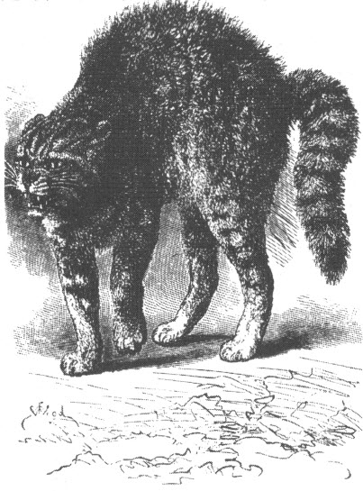
图15 一只在吓狗的猫 （武德先生写生画）
猫时常使用叫声来作为表情的手段；它们在各种不同的情绪和欲望之下，发出至少有6～7种不同的声音来。当中最奇妙的一种声音，就是表示满足的鼻音喃喃声（purr）；在吸气和呼气两种情形下，都能够发出这种声音来。美洲狮、印度豹（cheetah）、豹猫（Ocelot，墨西哥产）也能够发出同样的喃喃声来；可是，虎在愉快的时候，则“发出一种特殊的短促的鼻音，同时还把眼睑闭住。 (17) 据说，狮、美洲虎（jaguar）和豹并不发出喃喃声来。
马——马在怒恨时候，把双耳紧紧地向后牵伸，头部伸长，门齿一部分向外露出，准备要咬对方。它们在要向后蹴踢时候，通常由于习惯而把双耳向后牵伸，并且以特殊的样子把双眼向后转动。 (18) 在它们愉快的时候，例如在有人把某种很合意的食料送到马厩里给它们吃的时候，它们就把头部举起和伸长，耸起双耳，并且凝视着自己的朋友，时常发出嘶叫声来。同时用蹄踢地面，表示出焦躁不安来。
马在极度惊起时候的动作极其富于表情。有一天，我的马由于望见一架被放置在旷野里而蒙上油布的条播机，而发生了极大的惊吓。当时它就高举起头来，以致它的头颈几乎笔直向上竖起；这是由于习惯而造成的，因为这架条播机位在斜坡下面，所以马用举起头部的方法也未必会更加清楚地看到它；而且要是有任何声音从它那里传播过来，那么马也绝不会因此更清楚地听到这种声音。它的双眼和双耳正对着前方不动，同时我从马鞍上也能够感觉到它的心脏急跳。它用着发红的扩大的鼻孔发出激烈的哼鼻声来，转起圈子来；要是我不阻止它的话，那么它一定会用尽全力飞速逃跑。鼻孔的扩大，并不是为了要去嗅探出危险的来源，因为马在仔细嗅闻任何东西而并不发生惊慌的时候，却不把鼻孔扩大开来。由于马的喉都有瓣膜，所以它在喘息时候，不能够用张开的嘴来呼吸，只会用鼻孔来呼吸，因此鼻孔就获得了很大的扩张能力。鼻孔的这种扩大情形，还有哼鼻声和心脏急跳，都是在一连很多世代里长期和恐怖情绪牢固地联合起来的动作，因为恐怖使马在习惯上作出极其激烈的努力，要用尽全力飞速逃跑开危险的原因。
反刍动物——牛和羊除了受到极度苦痛以外，很微弱地表现出自己的情绪或者感觉来；它们因此而受到大家的注意。公牛在被激怒的时候，只是采取低头而且带着扩大的鼻孔的样子并且发出吼叫声，来表示自己的大怒。它时常也用蹄子蹴踢地面；不过这种蹴踢动作好像完全和焦躁不安的马的蹴踢情形不同，因为如果地面的泥土松软，公牛就会使地面扬起一阵阵灰尘来。我以为，公牛在被蝇类所激怒的时候，为了要驱除它们起见，也采用这种方法。羊的比较野性的品种和高山羚羊（chamois）在惊起的时候，就用脚踢地，并且用鼻子吹出尖锐声音来；这种举动是用来作为一种警告同伴的危险信号的。北极地区的麝香牛（muskox）在遭到袭击时候，也是用脚踢地。 (19) 我不能够猜测到这种踢地动作是怎样发生的，因为根据我已经做过的一些调查，可以认为，在这些动物当中，任何一种好像都不会用前脚来格斗。 (20)
有一种鹿在发怒的时候，要比牛、羊或者山羊作出更加多的表情动作来，因为它们也像上面所讲过的情形那样，会得把双耳向后牵伸，咬牙切齿，使毛发直竖起来，发出尖锐的嘶叫声，用脚踢地，并且舞动双角。有一天，在动物园里，有一头中国台湾鹿（Formosandeer，学名Cervus pseudaxis ）作着一种有趣的姿态，把嘴高举起来，因此使双角向后紧压在自己的颈背上，而头部则已经有些歪斜，就这样走近到我身边来。从它的眼睛的表情看来，我确信这头鹿在怒恨着我了；它慢慢地走近过来，而当它一走近铁栅边的时候，虽然没有低下头来向我正面撞击，但是突然把头向里面扭转，用巨大的力量把角猛撞在栏杆上。巴尔特莱特先生告诉我说，另外有一种鹿，在大怒发作时候也采取同样的姿态去猛撞对方。
猿类——猿类的不同的种和属，采取多种不同的方法来表达自己的感情；这种事实是很有趣味的，因为这对于是不是应当把所谓人种（races of man）看做是独立的种或者变种这个问题，有几分关系；因为我们从下面几章里可以知道，全世界各地的不同人种都用显著的同一方式来表达出他们的情绪和感觉，所以就会有这个问题发生出来。猿类的表情动作当中的几种，从另一方面看来，就是从它们极其相似于人类的表情动作方面看来，是很有趣味的。因为我不曾有机会在所有各种情况下去观察猿类的任何一种，所以最好是把我的拉杂的记述依照它们和各种不同的精神状态的联系特性而分配开来。
愉快、快乐、恋情 (21) ——如果要把愉快或者快乐去和恋情双方的表情区分开来，那么至少非具备比我所有的经验更加丰富的经验不可。幼年的黑猩猩（chimpanzee）在看到自己所依恋的任何一个人回来而感到愉快时候，就发出一种吠叫似的嘈声来。饲养员把这种嘈声叫做笑；在发出这种声音时候，它们的双唇向外伸出；可是，他们在发生其他各种不同的情绪时候，也做出这种动作来。不过，我可以辨认出，在它们愉快的时候，它们的双肩伸出形状，是和它们在发怒时候所采取的形状略有不同的。如果一只幼年的黑猩猩被搔痒（也像人类的小孩一样，对于腋窝处的搔痒特别敏感），那么它就发出一种更加明确的咯咯笑声或者普通笑声来，不过有时也会发出无声的笑。这时候嘴角向后伸长；这种动作有时也引起下眼睑略微皱缩。可是，在其他有几种猿方面，可以更加明显地观察到这种很成为人类的笑的特敏的眼睑皱缩情形。黑猩猩在发出笑声的时候，并不露出上颚的牙齿来；这一点是它们和人类不同的地方。可是，根据特别对它们的表情有研究的马丁（W. L. Martin）先生所说 (22) ，这时候它们的双眼闪闪发光，变得更加明亮。
幼年的猩猩（orang）在被搔痒时候，也露出牙齿来，发出咯咯声来；据马丁先生说，它们的眼睛变得更加明亮。当它们的笑声一停止的时候，就可以觉察出，它们的面部现出一种表情来；据华莱士（Wallace）先生对我所说，可以把这种表情叫做微笑。我曾经从黑猩猩方面注意到有一些相同的表情。杜庆博士（我再也举不出一个在这方面比他更加高明的权威来了）告诉我说，他在自己家里饲养一只很驯顺的猿已经有一年；他在吃饭时候如果递给它一种特别好吃的东西，那么可以观察到，这只猿的嘴角略微向上升起；因此，可以明显地看出，这种动物也具有一种满足的表情，这种表情在性质上极相似于一种初现的微笑，而且时常可以从人的面部上看到。
阿柴拉卷尾猴（Cebus azarae ） (23) 在再见到它所爱好的人而感到快乐时候，就发出一种特殊的嘻嘻笑声（吃吃笑声）。它又用嘴角向后牵伸而不发出任何声音的动作来表达出愉快的感觉。伦奇尔就把这种动作叫做笑，但是好像应该把它叫做微笑要比较适当些。嘴的形状在这时候，是和在表现苦痛或者恐怖的情绪并且发出高大的尖叫声时候不相同的。在动物园里，还有一种卷尾猴（Gebus hypoleucus ），在愉快时候就发出一种反复的尖叫声来，并且也把嘴角向后牵伸，这显然也是由于那些和人类相同的肌肉收缩而产生的。巴巴利（Barbary）产的北非洲无尾猿（Inuus ecaudatus ）的嘴角向后牵伸得特别显著；我曾经从这种猿身上观察到，这时候它的下眼睑的皮肤皱缩得更加厉害。同时，它还迅速地颤动下颚或者双唇，显出痉挛的样子，而牙齿则向外露出；可是，它所发出的声音，却只能够略微和我们有时所称做的默笑（silent laughter）区分开来。有两个饲养员肯定说，这种轻微的声音也就是动物的笑；当我对这种说法发生一些疑问的时候（当时我还完全没有经验），他们就教唆这只无尾猿，去进攻或者更加确切的说是威吓一只住在同笼里的可恨的长尾须猴（Presbutis entellus ，产于印度东部，龄属猴）。于是这只无尾猴的全部面目表情立刻发生变化，它的嘴张开得更加大，犬齿更加充分地露出，并且发出一种沙嘎的吠叫似的嘈声来。
饲养员曾经起初把阿努比斯狒狒（Cynocephalus anubis ）侮辱一番，因此使它发生极大的狂怒，好像这是它容易发生出来的表情那样；此后，又和它和好成为朋友，互相握起手来。在双方和好的时候，狒狒因此就使双颚和双唇迅速地上下颤动起来，并且显出愉快的样子。在我们作着衷心的喜笑时候，也可以或多或少清楚地观察到双颚发生相似的动作，或者颤抖起来；可是，在人类方面主要是胸部肌肉发生动作，而在这种狒狒和其他几种猿方面，则是受到痉挛影响的双颚和双唇的肌肉发生动作。
我曾经有机会提出过两三种猕猴（Macacus）和黑长尾猴（Cynopithecus niger ）在受到爱抚而愉快的时候，把双耳向后牵伸和发出一种轻微的喃喃声来的奇怪样子。关于长尾猴方面（图16和17），它的嘴角同时向后和向上牵伸，所以牙齿就显露出来。因此，一个不懂得这方面的情形的人，就绝不会把这种表情认做是愉快的表现。前额上的一簇长发被压抑下去，看上去好像整块头皮在向后牵伸。因此，尾巴也略微扬起，而双眼则采取凝视的样子。除此以外，下眼睑也略微皱缩起来，但是因为在它的面部上生有永久性的横纹，所以这种皱缩情形就不显著了。
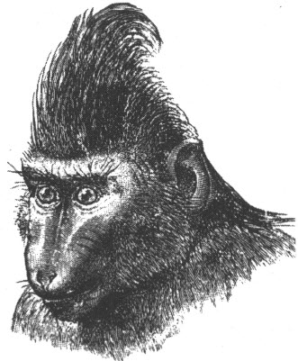
图16 黑长尾猴，在平静状态时候 （沃耳夫先生的写生画）
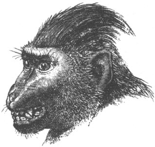
图17 同图16的黑长尾猴，在受到爱抚而愉快的时候 （沃耳夫先生的写生画）
苦痛的情绪和感觉——在猿类方面，轻微的苦痛的表现，或者任何苦痛情绪的表现，例如悲哀、烦闷、嫉妒等情绪的表现，很不容易和微怒的表情区分开来；这些精神状态也容易而且迅速轮流出现。可是，有几种猿的确也用哭泣来表明悲哀。有一个妇女把一只猿出售给动物学会（Zoological Society），认为它是从婆罗洲（Borneo，现名加里曼丹）那里运来的（学名是Macacus maurus 或者M. inornatus of Gra ——黑猕猴）；她说道，这只猿时常哭叫；巴尔特莱特先生，还有饲养员塞登（Suttcon）先生，曾经多次看到，它在悲哀时候或者甚至是在发生很大的哀怜时候，哭泣得很厉害，因此眼泪就从它的脸颊上滚落下来。可是，这种情形也有一些奇特，因为后来在动物园饲养两只猿，而且都被认为是和它相同的种；虽然饲养员和我都对它们作了仔细的观察，但是从来没有看到它们在非常悲痛和发出高声尖叫时候流出眼泪来。伦奇尔说道，在有人阻止阿柴拉卷尾猴取得极想要的一种东西时候，或者在它受到很大惊吓时候，它的眼睛里就充满着眼泪，但是还不致于流出来。 (24) 洪保德也肯定说，南美短尾猴（Callithrix sciureus ）的眼睛“在它发生恐惧时候就立刻满含着眼泪”；可是，在动物园里，这种可爱的小猴即使被人惹恼，以致高声大叫，也不会流出眼泪来。可是，我并不打算对洪保德的叙述的正确性方面发生丝毫的怀疑。
幼年的猩猩和黑猩猩在身体患病时候的沮丧神色，也像人类的小孩在这种情形时候那样哀哭，并且几乎相同的凄切动人。它们在这时候的精神和身体的状态，就表现在：无精打采的动作，凹陷的面部，无光的眼睛，还有发生变化的容貌。
愤怒——有很多种猿时常表现出这种情绪来；根据马丁先生所说， (25) 它们用很多不同的方法来表明愤怒。“有几种猿在发怒时候撅起嘴巴，用固定不动的怒恨的眼光凝视着敌人，并且做着几次小惊跳，好像要向前跳扑似的，同时还发出含糊的喉音。很多种猿就用突然向前奔冲，作着不连贯的突跳，同时张开了嘴，把双唇皱缩，因此把牙齿掩藏起来，而眼睛则大胆地凝视着敌人，好像在作着怒恨的挑战似的。还有几种猿，主要是长尾猿（Guenon，产于非洲东部的莫三鼻给地区），在愤怒时候露出牙齿来，而且还作出恶狠的张牙和发出一种尖锐、断续而且多次反复的喊叫声来”。塞登先生证实说，有几种猿在大怒时候露出牙齿来，而另一些猿则由于撅起双唇而掩藏去了牙齿；还有几种猿把双耳向后牵伸。前面曾经讲到的黑狒狒（Cynopithecus niger ），也做出这种样子来，同时把前额上的一簇长发压抑下去，并且露出牙齿来，因此这些由于愤怒而发生的面部动作，差不多也和那些由于愉快而发生的面部动作相同；只有那些熟悉这种猿的人，方才能够辨别得出这两种表情来。
狒狒时常用很奇特的样子，就是大张开嘴，好像在打呵欠的样子，来表明出自己的激情和威吓敌人。巴尔特莱特先生时常看到两只狒狒，在最初被关进同一只兽笼里的时候，它们彼此相对坐下，并且轮流张开嘴来；大概这种张嘴的动作时常以真正的打呵欠来作为收尾。巴尔特莱特先生以为，这两只动物都想要彼此显示出自己配备有一套可怕的牙齿，而且这是千真万确的情形。 (26) 因为我很难相信这种打呵欠姿态是真实的情形，所以巴尔特莱特就去侮辱一只老狒狒，使它发生狂怒的激情来，因此它差不多立刻做出这种打呵欠的动作来。有几种猕猴（Macacus ）和长尾猿 (27) 也采取同样的举动。勃烈姆曾经在埃塞俄比亚境内饲养狒狒，据他对这些狒狒所作的观察可以知道，它们还用另一种方式来表示愤怒，就是用一只手敲击地面，“好像一个发怒的人用拳头敲击桌面”。我曾经在动物园里看到狒狒作出这种动作来；可是我以为，有时好像这种动作比较确切地表明出要去从它们的草褥下面找寻出一块石头或者其他东西的情形。
塞登先生时常观察到，恒河猕猴（Macacus rhesus ）在大怒发作的时候，满脸发红。当他正在告诉我这种情形的时候，就有另一只猿向恒河猕猴攻击，因此我就看到后者的面部发红起来，也像一个人在狂怒发作时候满脸涨红的情形一样显明。在双方作战以后，经过了不多几分钟，这只猕猴才恢复本来的脸色。在它的脸色变红的同时，身体后面经常是红色的部分，好像也变得更加红些，但是我还不能够真正肯定说，情形正是这样的。据说，在西非大狒狒（山魈，Mandrill）受到任何的激奋时候，它的颜色鲜明的裸出的皮肤部分，总是变得更加鲜艳。
有几种狒狒的前额的弧突，在眼睛上面向外突出得很厉害，并且有不多几根长毛分布在它的面上，相当于人类的眉毛。这些狒狒时常向身子周围看望；可是为了要向上瞧看，它们就要把眉毛向上扬起。因此，显然可以知道，它们就这样获得了经常移动眉毛的习性。无论怎样，有很多种猿，特别是狒狒，在发怒或者受到任何的激奋时候，总是要把眉毛作着迅速不断的上下移动，而且连同前额上的生发的皮肤一起移动。 (28) 因为我们已经把人类方面的眉毛上扬和下降的移动去和一定的精神状态联合起来，所以猿的这种眉毛几乎不断地移动的情形，就使人觉得它们在作着一种愚蠢的表情。有一次我观察到一个男人，他也有一种在毫无相应的情绪下把眉毛不断上扬的性癖，所以这就使他显出一种愚蠢的外貌来；同样也可以观察到有些人经常把嘴角向后和向上牵伸，好像在发出初起的微笑似的，其实他们当时并不感到可笑和愉快。
幼年的猩猩在看到饲养员照料另一只猿而发生嫉妒的时候，就略微露出牙齿来，并且发出一种“替什-希斯特”（tish-shist）的温怒的声音来，于是转身把背部向着饲养员。无论猩猩或者黑猩猩，在略为强烈地发怒时候，都要把双唇很显著地向外伸出，并且发出一种尖锐的吠叫似的嘈声来。幼年雌黑猩猩在发生狂怒的激情时候，表现出一种和人类的小孩在同样状态下的情形特别相似的行动来。它把嘴大张开来，高声尖叫，双唇向后退缩，因此牙齿就完全显露出来。它把双臂乱挥，有时抱住头部。它在地上打起滚来，有时朝天，有时朝地，并且把各种可以被抓到的东西乱咬。有人曾经叙述道，幼年的长臂猿（gibbon，学名Hylobates syndactylus ）在激怒时候差不多也表现出完全相同的举动来。 (29)
幼年的猩猩和黑猩猩的双唇，在各种不同的情况下都要向外伸出，有时达到惊人的程度。它们不仅在略微发怒、不快活或者失望的时候把双唇伸出，而且在对任何事情发生惊慌的时候，例如有一次看到一只乌龟的时候， (30) 也做出这种动作来；还有在愉快的时候，也这样做。可是，我以为，在所有这些情况下，无论双唇伸出的程度，或者嘴的形状，绝不会是完全相同的；还有当时它们所发出的声音也是不同的。这里所附印出的一张图（图18），表明出一只黑猩猩由于有人要给它一只甜橙，但接着又取走了它，因而发生不快活的神色来。在不快活的小孩方面，也可以看到，他的双唇作着相似的伸出或者撅起的动作，不过要比黑猩猩的双唇伸出程度轻微得多。
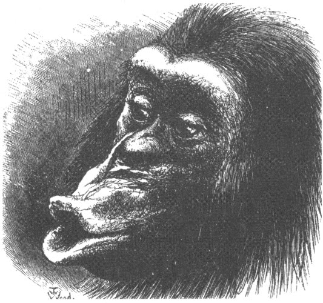
图18 一只失望的而且不快活的黑猩猩 （武德的写生画）
很多年以前，在动物园里，我把一面镜子放在两只幼年的猩猩面前的地板上；据大家所知道，它们从来没有看到过镜子。起初，它们以经常不断的惊奇向镜子里的自己的像凝视着，接着就时常变更自己的视线角度去看它。此后，它们走近镜子，向自己的像伸出双唇，好像要和它接吻似的；这种行动，完全像是这两只猩猩在几天以前被初放在同一房间里时候彼此相对作出的动作一样。再后，它们扮起各种各样的怪相来，并且还在镜子面前表演各种不同的姿态；它们去按住和擦拭镜面，把双手搁放在镜子后面的不同距离处，在镜子后面窥望，最后又好像发生了一些惊恐，略微惊跳，开始生气，从此就拒绝再去瞧它了。
我们在尝试要做一种有些困难而需要精确的动作时候，例如在用线穿针的时候，通常就把双唇紧闭起来；我以为，这是因为要使自己的呼吸不至于妨碍这些动作我注意到一只幼年的猩猩也有同样的动作。这只可怜的小动物正在生病，为了自取其乐，而打算用手指关节去揿死窗玻璃上的苍蝇；这件事情有相当困难，因为苍蝇在嗡嗡地飞旋着；当时猩猩在每次作着这种尝试的时候，就把双唇紧紧闭住，同时略微向外伸出。
虽然猩猩和黑猩猩的面貌，特别是姿态，在有些方面极其富于表情，但是我以为，整个说来，它们是不是也像其他几种猿的表情那样富于表情，这是可以怀疑的。可以认为，这种怀疑的起因，一部分就在于它们的双耳不能够移动，另一部分则在于双眉裸露缺毛，因此眉毛的移动情形就不显著。可是，当它们把双眉扬起的时候，也像人类的扬眉情形一样，在它们的前额上就出现横皱纹。在和人类的面部作比较的时候，它们的面部就显得没有表情；主要的原因就在于它们在任何的心情之下都不皱眉；据我所能观察到的情形，就是这样；我曾经仔细注意到这一点。在人类的一切表情当中，皱眉是最重要的表情之一；这种动作是由于皱眉肌（corrugators）的收缩而产生的；眉毛由于这种收缩而下降，相聚在一起，因此在前额上形成了一道垂直的沟纹。据说， (31) 猩猩和黑猩猩也都具有这种肌肉，大概它们使用这种肌肉的次数极少，至少是使用得不显著。我曾经把双手围成笼子形状，把一只鲜美的水果放在当中，然后让幼年的猩猩和黑猩猩来尝试用最大的力量夺取这只水果；可是，它们虽然显出很不快活的样子，却仍旧没有露出一丝皱眉的痕迹来。它们在大怒时候也不皱眉。曾经有两次，我把两只黑猩猩从比较黑暗的房间里突然携带到明亮的太阳光下去；这种太阳光确实会使我们人类皱起眉来；当时它们只把眼睛眯细着和霎动着，只有一次我才看到极其轻微地皱眉。还有一次，我用一根麦秆去搔划黑猩猩的鼻子，因此使它的面部皱缩起来，同时在双眉中间出现了一些轻微的垂直沟缝。我从来没有看到在猩猩的前额上有蹙额的情形。
已经有人叙述到，大猩猩（gorilla）在大怒的时候，表现出一簇头发向上直竖，下唇低降，鼻孔扩大，而且发出可怕的叫喊声来。沙凡奇（Savage）和华爱孟（Wyman）两先生 (32) 肯定说，大猩猩的头皮能够前后自由移动；当它被激奋起来的时候，它的头皮就强烈收缩起来；可是，据我看来，他们所说的头皮收缩的表现，大概是指头皮向下降，因为他们也讲到幼年的黑猩猩在高叫时候有这种表现道：“双眉强烈收缩”。值得使人注意的是：大猩猩、很多狒佛和其他的猿的头皮的很大移动能力，是和有一些人由于返租现象（reversion）或者发育停滞（persistence）而具有的随意移动头皮的能力有关系的。 (33)
吃惊，恐怖——饲养员接受我的请求，把一只淡水产的活龟放进动物园的一只养有很多猿的兽笼里去；这时候，这些猿就表示出无限的吃惊来，同时也有几分恐惧。这种情形就表现在：它们站定不动，用大张的双眼专心凝视，双眉时常上下移动。它们的面部好像有些伸长。它们有时就用后脚站立起来，使自己的身体增高，以便作更加清楚地瞧看。它们有时向后退走几英尺，于是把头转过来，从一侧的肩头上回望，再专心凝视着这只乌龟。观察到下面的情形，使人感到有趣，就是：它们对于乌龟所表现的害怕程度，要比对于活蛇（我以前曾经把活蛇放进到它们的笼子里去过）所表现的害怕程度微小得多， (34) 因为在过了不多几分钟以后，竟有几只猿大胆走近到乌龟那里去，并且摸触它。另一方面有几只较大的狒狒发生很大的恐怖，露出牙齿来，好像要尖叫起来似的。我曾经拿了一个穿衣的小傀儡去给黑狒狒（Cynopithecus niger ）看；它看见了就站立不动，用着大张的眼睛专心凝视，并且把双耳略微向前移动去倾听。可是，在把乌龟放进到它的笼子里去的时候，这只黑狒狒还把双唇作着奇特的迅速的移动，好像在发生喃喃的声音；据饲养员说，这种举动的意义是要同乌龟和好，或者使乌龟感到愉快。
我从来没有成功地看出，吃惊的猿的眉毛会保持长久上扬的位置，不过它们时常把眉毛上下移动。人把眉毛略微上扬，来表现他在吃惊以前所作的注意。杜庆博士告诉我说，当他送给上面所提到的一只猿一种它从来没有吃到过的食物时候，这只猿就略微把眉毛扬起，因此就显出一种细心注意的样子。此后，它用手指去取这种食物，并且使双眉下降或者成一直线，用指甲去抓搔食物，而且嗅闻和察看它；这是一种因此而表现出来的回想的表情。有时，它的头部略向后仰，又再突然扬起双眉，重新察看食物，最后就去尝食它。
任何的猿在吃惊的时候，从来都没有把嘴保持张开的位置。塞登先生代我观察了幼年的猩猩和黑猩猩有相当长的期间；据他说，它们无论吃惊到什么程度，或者在专心倾听某种奇怪的声音时候，总是不把嘴保持张开的位置。这种事实是使人惊奇的，因为在人类方面，对于吃惊的感受，未必再有此大张开嘴的动作更加普遍的表情了。根据我所能观察到的情形说来，猿类要比人类更加自由地用鼻孔来呼吸；这一点可以去说明它们在吃惊时候并不张开嘴来的原因，因为我们在后面有一章里可以看到，人类在惊奇的时候就作着外表相似的动作；最初为了要迅速作一次充分的吸气，随后则为了要尽可能进行平静的呼吸。
有很多种猿用发出尖锐叫喊声来表现出恐怖情绪；这时候双唇向后牵伸，所以牙齿就显露出来。它们的毛发开始直竖起来；如果它们同时还带有几分愤怒，那么毛发直竖的情形就特别显著。塞登先生曾经清楚地看到，恒河猕猴（Macacus rhesus ）由于恐惧而脸色变得苍白。猿类也会由于恐惧而发抖；有时它们因此排出粪便来。我曾经看到，有一只猿在被捕捉住的时候，由于恐怖过度而几乎昏厥过去。
现在我们已经充分举出了各种不同的动物的表情方面的事实。我不能同意贝尔爵士的说法，就是他说道：“动物的面部好像主要是能够表达出大怒和恐惧来”；他还说道，动物的一切表情“都可以或多或少明显地被归属于意志的动作或者必要的本能的动作方面去”。 (35) 如果有人看到一只狗准备进攻另一只狗或者陌生人的情形，看到就是这只狗向主人表示亲爱的情形，或者去注视一只猿在受到侮辱时候的面貌和它在受到饲养员的爱抚时候的面貌，那么他会不得不承认说，这些动作的面容和姿态的动作，也差不多和人类的这些动作一样富于表情。虽然这些比较下等的动物的有些表情还不能得到说明，但是它们的大多数表情则可以依照前面第一章开头时候所举出的三个原理来获得说明。
————————————————————
(1) 原文是，to have his back up，意指狗背的毛直竖起来，或怒发冲冠，通常作“激怒”或“毛发直竖”解。——译者注
(2) 贝尔：《表情的解剖学》，1844年，第190页。
(3) ［华莱士先生提出了一个不同的说明如下《科学季刊》，Quarterly Journal of Science ，1873年1月，第116页。“因为全部可以利用的神经力量都被耗在移动方面，所以一切特殊的肌肉的收缩，都不能够促进这种运动，而停止下来了”。］
(4) 格拉希奥莱：《人相学》（De la Physionomie ），1865年，第187页，第218页。
(5) “动物时常用自己身体的最敏感的部分，去找寻爱抚，或者自己去表示恋情。因为身体侧面和身体全长是敏感的，所以动物在受到爱抚的时候，就把身体屈曲和俯伏下去；这些屈曲动作就沿着相应的背部肌肉范围传布开来，一直到脊椎的末端为止；同时，尾巴也随着屈曲，并且左右摇摆起来”。——译者注
(6) ［波德莱（Baudry）先生在一封来信里指出《罗摩衍那》（印度古代史诗，Rämäyana，讲述北印度的阿逾陀国王太子罗摩的伟大功绩——译者）里的一段话，讲到一个母亲在发现儿子的尸体时候的情形说：“lèche avec sa langue levisage du mort en gemissant comme une vache privée de son veau”（用舌头舔着死儿，呻吟叹息，像母牛丧失了自己的小牛一样）。］
(7) ［东印度公司的电报局里的一位电讯员说道（1875年2月14日的来信），牛的露齿是和性欲的本能有联系的。他写道：“我正购买到一头公牛，并且想要察看它的牙齿，但是它无论怎样都不让我看；土人们建议说，应当牵一头母牛来才行”；在把母牛牵来的时候，“公牛立刻伸长头颈，张开双唇，因此就把牙齿露出来了”。他还讲道，在印度地方，这种牵一头母牛来使公牛露出牙齿的举动，是一件普通的事情。］
(8) 斯比兹种猎狗（Spitz）产在波兰，毛长而有丝光，尾巴蓬松，嘴、鼻和耳朵部尖锐。——译者注
(9) 《表情的解剖学》，1844年，第140页。
(10) ［大概夹尾的情形不一定是在于要保护尾巴这个企图，而是在于要尽量减小暴露的表面这个一般企图的一部分（可以和下面所讲到的猎狗跪在地上的情形对照）。有一个通讯者把夹尾情形去和一种抛球游戏（fives）里的玩者的蹲伏情形作比拟；玩者在被同伴用球击中的时候，就被迫退出，而作这种蹲伏姿态。如果波德莱先生把耸肩和努力缩头两种动作联系起来方面是正确的（参看此处 ），那么耸肩的情形也因此是和夹尾情形类似的了。］
(11) ［在大约5000年以前的一种叙述大洪水事情的楔形文字的碑文里，讲到天神们对飓风发生恐怖的情形。有一句写道：“这些天神像夹尾巴的狗一样，蹲伏在地上”。这个附注是从报纸上剪取来的，由查理士·达尔文所保存，但是没有加写日期和标题。］
(12) ［阿塞·尼古尔斯（Arthur Nicols）先生在《乡野杂志》（The Country ，1874年12月31日，第588页）里讲述道，差不多在两年里面，他具有了关于纯种澳洲野狗（dingo）的“详尽知识”（这只狗是从野狗窝里的小狗当中被他取来饲养的）；在这个期间里，他从来没有看到这只狗在走近陌生狗时候把尾巴摇摆或者竖起的情形。］
(13) ［格耳顿斯塔特（Gueldenstädt）在Nov. Comm. Acad. Sc. Imp. Petrop. （1775年，第20卷，第449页）里，在叙述到胡狼方面时候提供了很多详细情节。还可以参看《土地和水》杂志（Land and Water ，1869年10月）里关于这种动物的习性和游戏情形的卓越叙述。海军上尉安尼斯莱（Annesley，E. A.）也告诉我一些关于胡狼的详细情节。我曾经到动物园里去作了多次关于狼和胡狼的询问，并且亲自观察过它们。］
(14) 《土地和水》杂志，1869年11月6日。
(15) ［北明翰（Birmingham）的鲁意德（R. M. Lloyd）先生讲述到（1881年1月14日的来信）一只驯顺的狐狸舔主人的手和脸。］
(16) 阿柴拉：《巴拉圭的四足兽》（Quadrupèdes du Paraguay ），1801年，第1卷，第136页。
(17) 《土地和水》杂志，1867年，第657页。还可以参看阿柴拉在上面所举出的著作里关于美洲狮的叙述。
(18) 贝尔爵士：《表情的解剖学》，第三版，第123页。还可以参看第126页，关于马不用嘴进行呼吸的叙述，同时也提到它们的扩大的鼻孔。
(19) 《土地和水》杂志，1869年，第152页。
(20) ［哈尔格林（Hall Green）地方的虎克汉（G. Hookham）先生在来信里肯定说，他曾经看到有些羊“用前脚恶意地蹴踢小狗”。可是，根据虎克汉先生所提出的意见，好像会使人怀疑，这种动作是不是能够成为一头发怒的羊用脚踢地的起源。
是不是可能认为，脚踢地面单单是一种信号，而且因为这种声音和一头惊起的羊惊恐地急逃时候所发出的声音相似，所以能够被羊所理解到？］
(21) ［关于这个问题，可以参看《人类起源》，从《自然》杂志（Nature ，1876年11月2日，第18页）里转载过来的补充的短文。指猿类的性选择（Sexual Selection in relation to Monkeys）。——译者注］
(22) 马丁：《哺乳动物的自然史》（Natural History of Mammalia ），1841年，第1卷，第383页和第410页。
(23) 伦奇尔（《巴拉圭的哺乳动物的自然史》，1830年，第46页）曾经把这些猿关在它们的本乡巴拉圭地方的兽笼里7年。
(24) 伦奇尔：《巴拉圭的哺乳动物的自然史》，1830年，第46页。洪保德（Humboldt）：《旅行记》（Personal Narrative ），英文译本，第4卷，第527页。
(25) 马丁：《哺乳动物的自然史》，1841年，第351页。
(26) ［狒狒在张口作威吓状态时候，好像在进行有意识的行动…，因为巴尔特莱特先生曾经饲养几只被截去犬齿的狒狒，它们从来没有作过这种行动，因为它们恐怕不愿把自己变成无能力的情形显示给同伴们看”。‘达尔文的笔记’，在1873年11月14日记写信。］
(27) 勃烈姆：Thierleben ，1864年，第1册，第84页。关于狒狒用手敲击地面的情形，参看同书第61页。
(28) 勃烈姆指出说（“Thierleben ”，第63页），北非洲无尾猿（Inuus ecaudatus ）在发怒的时候，时常把眉毛上下移动。
(29) 本耐特（G. Bennett）；《新南威尔士的漫游记》（Wanderings in New South Wales ）等，第2卷，1834年，第153页。
(30) 马丁：《哺乳动物的自然史》，1841年，第405页。
(31) 关于猩猩方面，参看欧文（Owen）教授的文章，《动物学会记录》，1830年，第28页。关于黑猩猩方面，参看马卡斯脱尔教授的文章，《自然史记录杂志》（Annals and Mag. of Nat. Hist. ），第7卷，1871年，第342页；据他所说，皱眉肌（corrugator supercilii ）是和眼轮匝肌（orbicularis palpebrarum ）不可分离的。
(32) 沙凡奇和华爱孟的文章，载在波斯顿《自然史杂志》（Boston Journal of Nat. Hist. ），1845—1847年，第5卷，第423页。关于黑猩猩，也可以参看这个杂志，1843—1844年，第4卷，第365页。
(33) 关于这个问题，参看《人类起源》，第二版，第1卷，第18页。［就是第一章的原注27处的正文。——译者注］
(34) 《人类起源》，第二版，第1卷，第108页。［就是第三章的原注12处的正文。——译者注］
(35) 贝尔爵士：《表情的解剖学》，第三版，1844年，第138页和第121页。